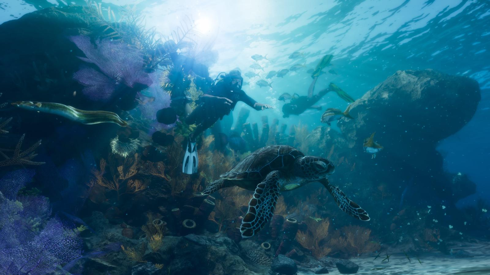
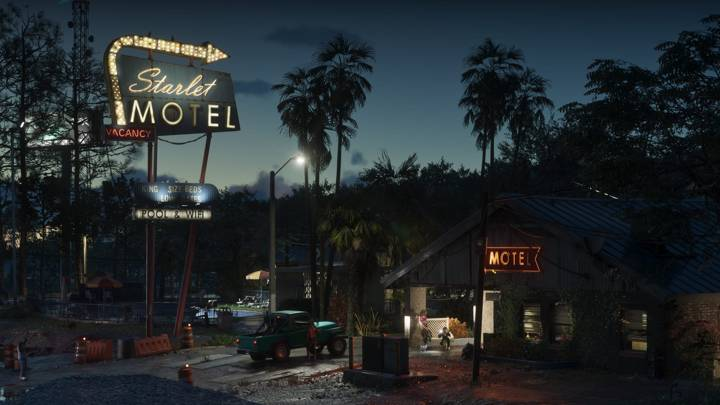
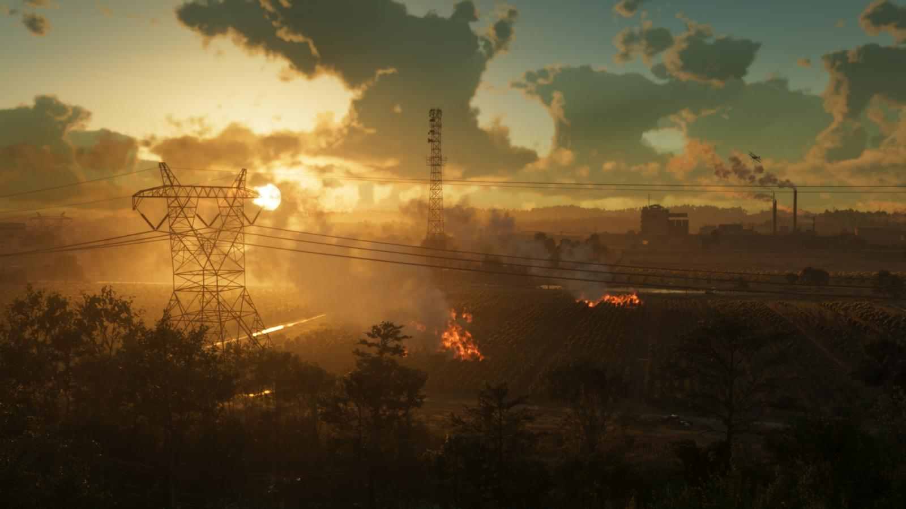
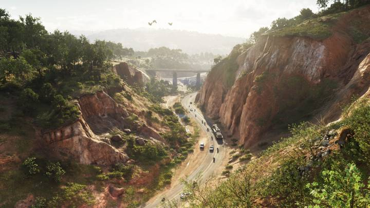

Карта GTA 6: штат Леонида и все регионы
Обновлено:

- Действие — в вымышленном штате Леонида, аналоге Флориды.
- Главный город — Вайс-Сити (аналог Майами).
- Rockstar официально показала 6 регионов.
Штат Леонида
GTA 6 переносит серию в вымышленный штат Леонида, прототип которого — Флорида. Сердце карты — Вайс-Сити, «тёмная сторона самого солнечного места Америки». Подробнее о размерах — Размер карты GTA 6 по сравнению с GTA 5.
Все регионы

Вайс-Сити (Vice City)
Крупнейший город штата: пляжи, ночная жизнь, яхты и небоскрёбы. Подробно — в статье о Вайс-Сити.

Leonida Keys
Тропический архипелаг — цепочка островов, гидропланы, лодки и неспешная жизнь у воды.


Grassrivers
Дикие болота и заросли — первозданная природа, где никогда не знаешь, что скрывается под водой.

Port Gellhorn
Портовый городок на побережье: мотели, неоновые вывески, курорт, переживший лучшие времена.

Ambrosia
Сельский регион в центре штата с промышленными окраинами, байкерами и заводами.


Национальный парк Mount Kalaga
Просторы на севере штата: каньоны, леса, охота, рыбалка, каяки и бездорожье.
Регионы и прототипы
| Регион GTA 6 | Реальный прототип |
|---|---|
| Вайс-Сити | Майами |
| Leonida Keys | Флорида-Кис |
| Grassrivers | Эверглейдс |
| Port Gellhorn | Побережье Мексиканского залива |
| Ambrosia | Центральная Флорида |
| Mount Kalaga | Север Флориды |
Прототипы — по сходству с официальными кадрами; сама Rockstar реальные места не называет.
Источники: Rockstar Games — официальный сайт GTA VI (rockstargames.com/VI), Rockstar Newswire.